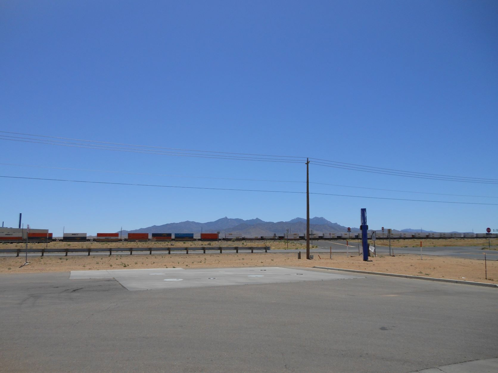
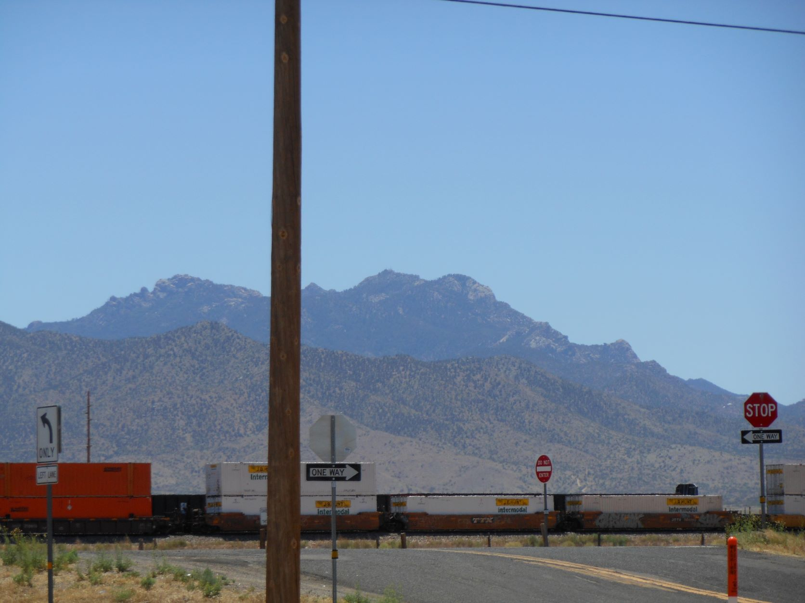
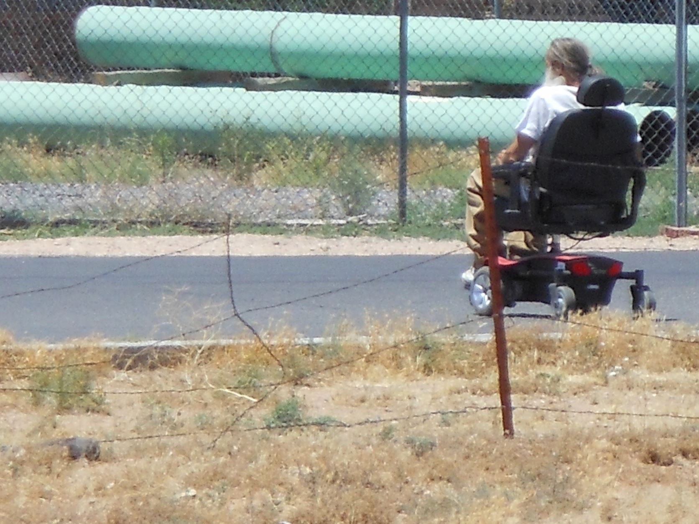
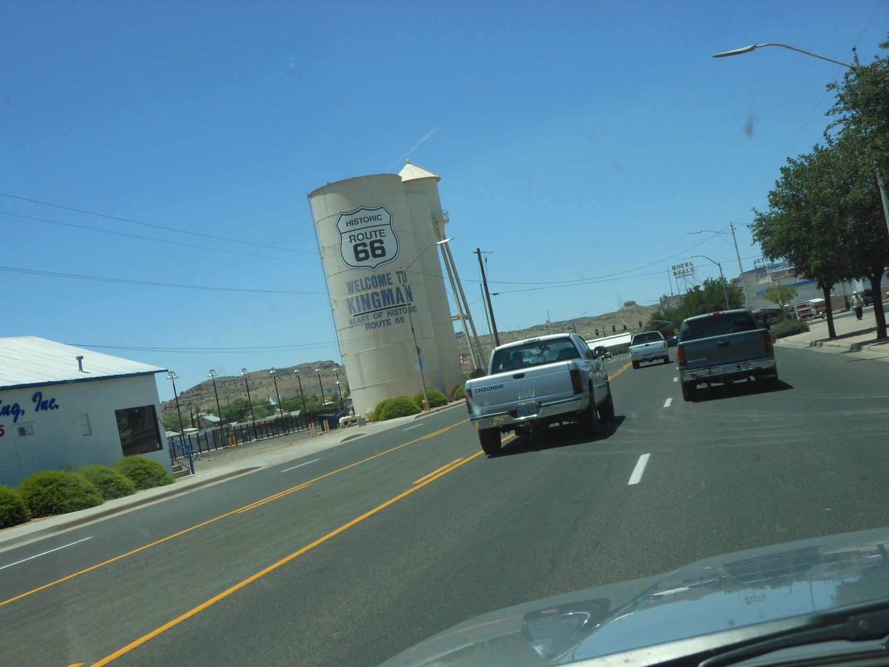
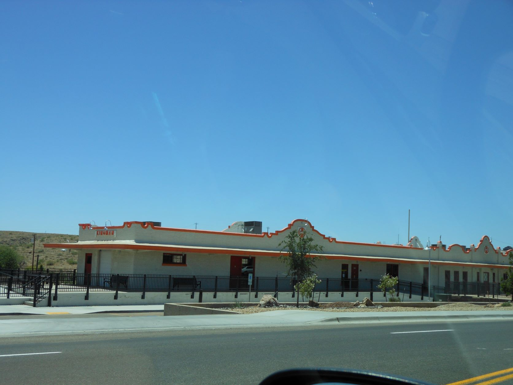
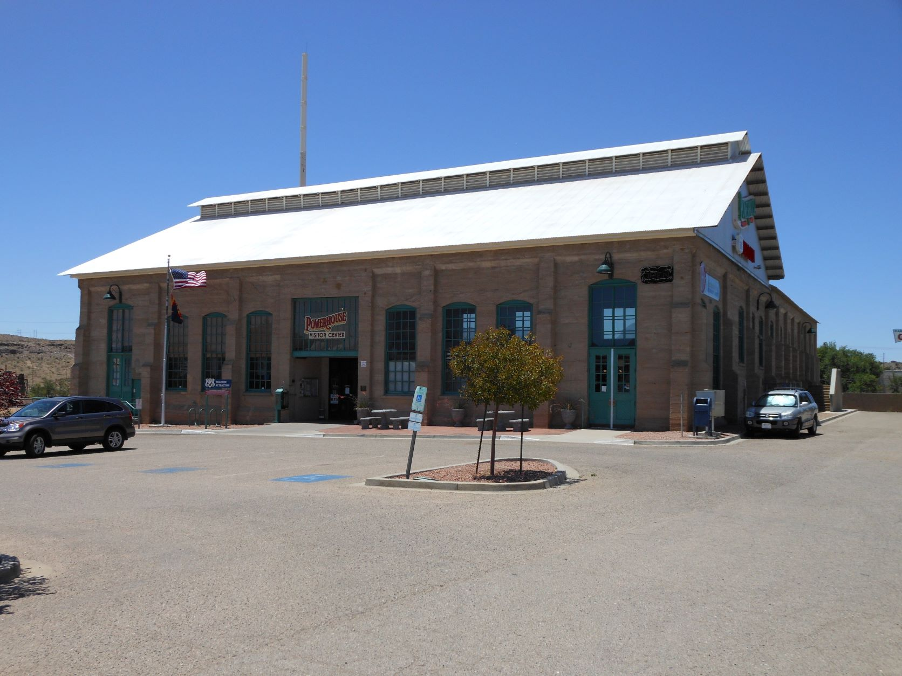
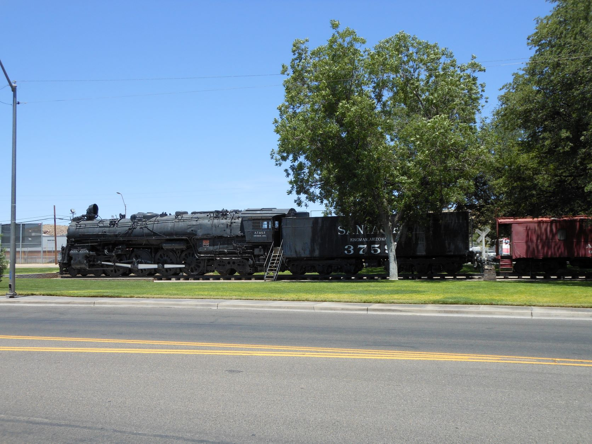
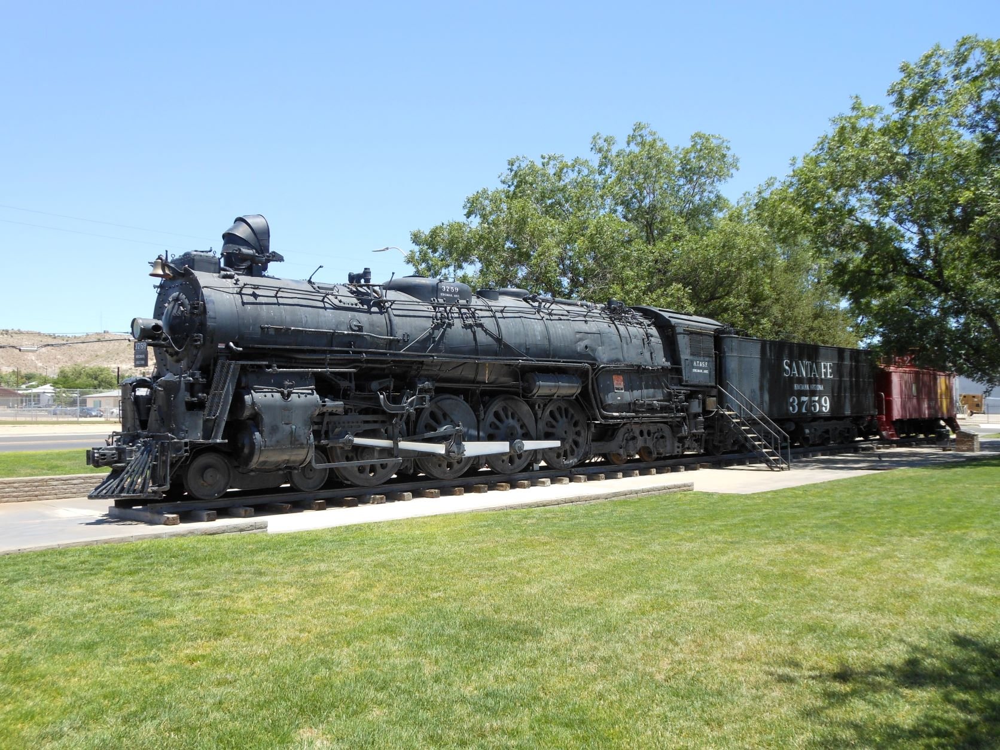
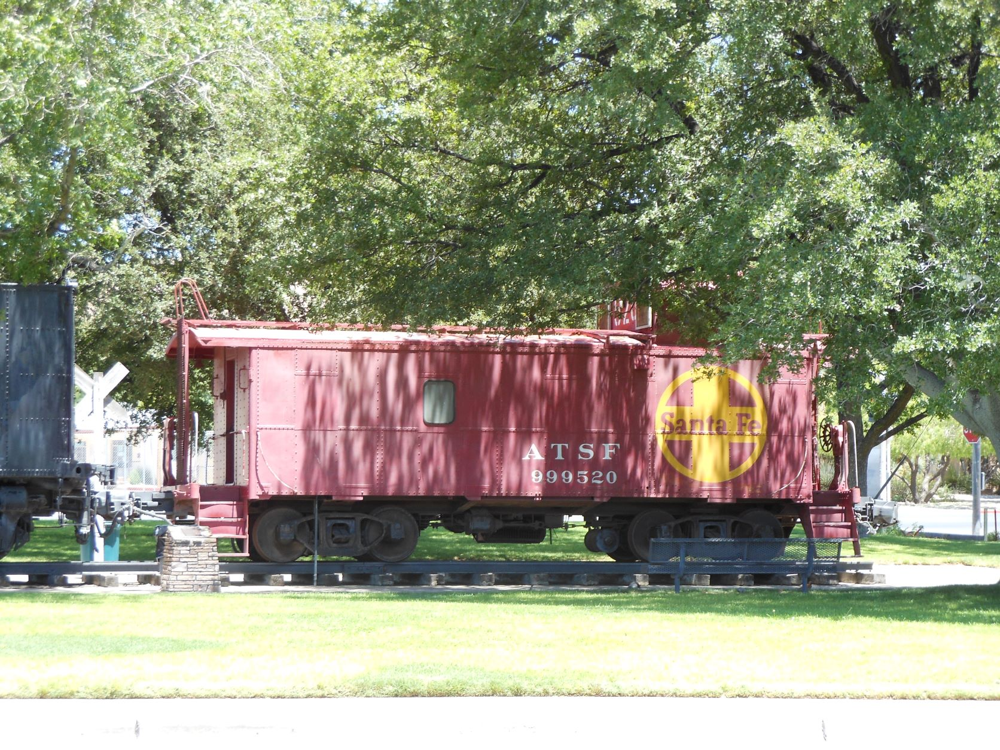

June 15, 2012 - Kingman, AZ

Train junction - Kingman, AZ

Train junction - Kingman, AZ

Hoveround roaming Kingman - Kingman, AZ

Kingman water tower - Kingman, AZ

Kingman train station - Hackberry, AZ

Powerhouse Visitor Center - Kingman, AZ

Santa Fe Railroad 2-4-2 steam locomotive - Kingman, AZ

Santa Fe Railroad 2-4-2 steam locomotive - Kingman, AZ

ATSF caboose - Kingman, AZ